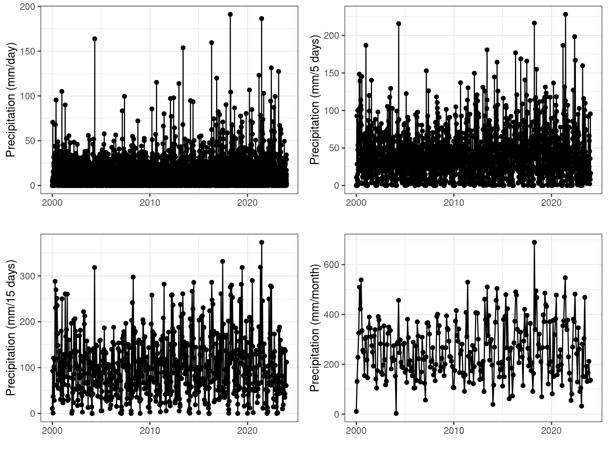
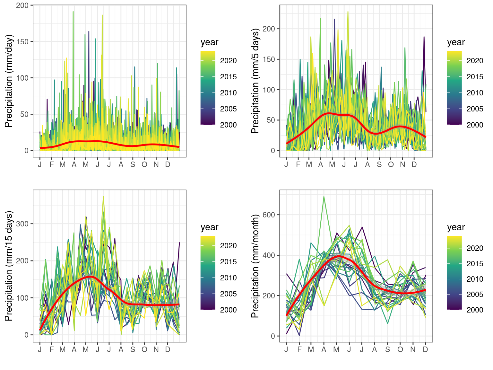

Precipitation



| diff | lwr | upr | p adj | |
|---|---|---|---|---|
| Degraded tropical moist forest-Deforested land | -14.33198 | -15.95232 | -12.71165 | 0 |
| Undisturbed tropical moist forest-Deforested land | -28.86760 | -29.99932 | -27.73588 | 0 |
| Undisturbed tropical moist forest-Degraded tropical moist forest | -14.53562 | -15.72819 | -13.34304 | 0 |

| precipitation month=1 | |||
| Predictors | Estimates | CI | p |
| (Intercept) | 17.09 | 9.94 – 24.23 | <0.001 |
| type [Degraded tropical moist forest] |
-0.92 | -8.73 – 6.89 | 0.817 |
| type [Undisturbed tropical moist forest] |
-7.60 | -13.65 – -1.54 | 0.014 |
| y | 5.28 | 3.47 – 7.09 | <0.001 |
| mem1 | 17.68 | 16.89 – 18.47 | <0.001 |
| mem2 | 2.32 | 1.15 – 3.49 | <0.001 |
| mem3 | 2.91 | 2.14 – 3.68 | <0.001 |
| Observations | 1000 | ||
| R2 / R2 adjusted | 0.697 / 0.695 | ||
Df Sum Sq Mean Sq F value Pr(>F)
type 2 15524 7762 50.53 < 2e-16 ***
y 1 13667 13667 88.98 < 2e-16 ***
mem1 1 311498 311498 2027.98 < 2e-16 ***
mem2 1 1916 1916 12.47 0.000432 ***
mem3 1 8437 8437 54.93 2.67e-13 ***
Residuals 993 152525 154
---
Signif. codes: 0 '***' 0.001 '**' 0.01 '*' 0.05 '.' 0.1 ' ' 1
formula: `precipitation_month=1` ~ type + Matern(1 | y + x)
ML: Estimation of corrPars, lambda and phi by ML.
Estimation of fixed effects by ML.
Estimation of lambda and phi by 'outer' ML, maximizing logL.
family: gaussian( link = identity )
------------ Fixed effects (beta) ------------
Estimate Cond. SE t-value
(Intercept) -1.7285060 30.29174 -0.05706
typeDegraded tropical moist forest 0.0002642 0.02264 0.01167
typeUndisturbed tropical moist forest 0.0017615 0.01885 0.09342
--------------- Random effects ---------------
Family: gaussian( link = identity )
--- Correlation parameters:
1.nu 1.rho
1.4868725 0.4428018
--- Variance parameters ('lambda'):
lambda = var(u) for u ~ Gaussian;
y + x : 1598
# of obs: 1000; # of groups: y + x, 1000
-------------- Residual variance ------------
phi estimate was 0.000178531
------------- Likelihood values -------------
logLik
logL (p_v(h)): 270.6328